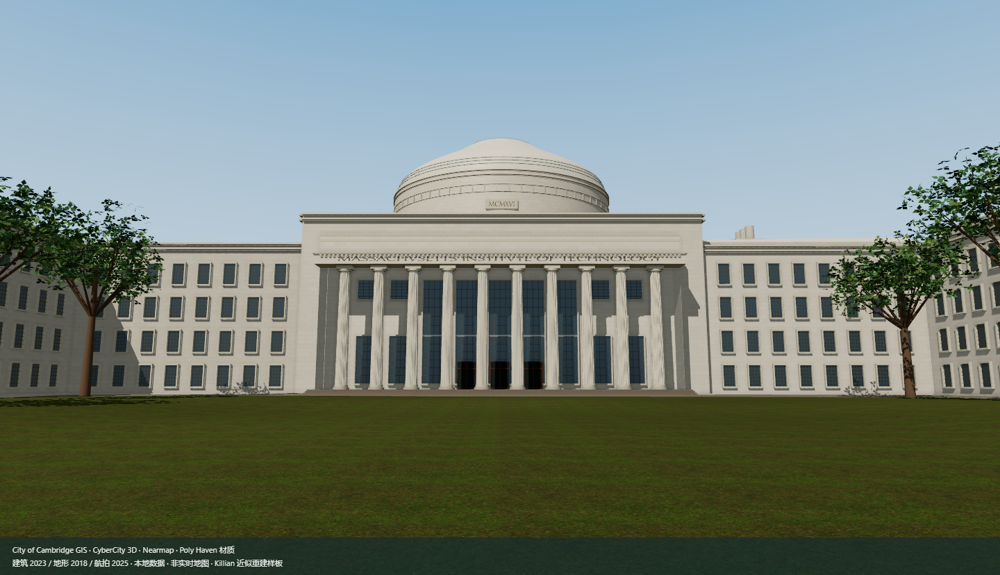
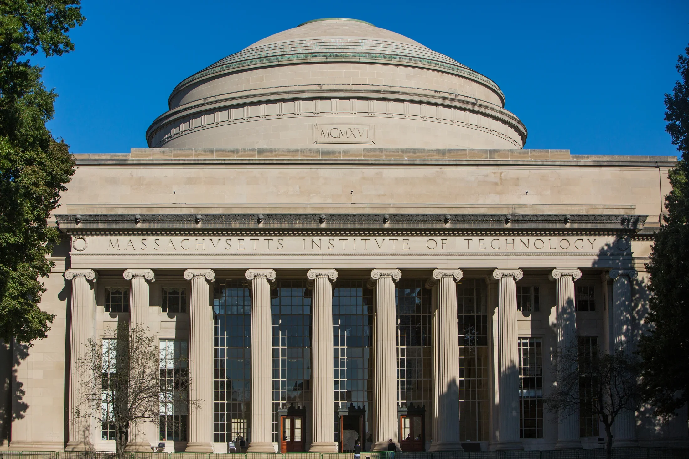

第一阶段主楼柱廊样板：真实开口、后退玻璃、分层柱脚与柱头，以及石材和草坪表面。

用带开口的墙体替换实心面，玻璃退入墙内，补齐窗台、侧壁与门组构造。
补柱脚层线、柱头卷涡、檐口和踏步边缘；现有五级台阶高度保持一致。
依据照片推定构造，尺寸尚未实测。3、4 号楼、树木与河岸仍待后续细化。

照片来源：MIT List Visual Arts Center / MIT Image Library。仅用于视觉参考，非同机位测量对照。